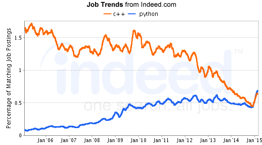

Charming Python
With C++
Tanner Sansbury
“Python is a programming language that lets you work more quickly and integrate your systems more effectively.”
It is in demand too...
It is not the right
tool for
everything
But it is pretty awesome
for integration
Harness the Power of C++
The original, popular, and most-maintained implementation is written in C.
Interfacing is as easy as using the Python/C API.
But it really is
not that easy...
static PyObject *my_callback = NULL;
static PyObject *
my_set_callback(PyObject *dummy, PyObject *args)
{
PyObject *result = NULL;
PyObject *temp;
if (PyArg_ParseTuple(args, "O:set_callback", &temp)) {
if (!PyCallable_Check(temp)) {
PyErr_SetString(PyExc_TypeError, "parameter must be callable");
return NULL;
}
Py_XINCREF(temp); /* Add a reference to new callback */
Py_XDECREF(my_callback); /* Dispose of previous callback */
my_callback = temp; /* Remember new callback */
/* Boilerplate to return "None" */
Py_INCREF(Py_None);
result = Py_None;
}
return result;
}
Extending
Python owns main().
C++ exposed as shared libaries and can be imported as a Python module.
Embedding
C++ owsn main().
Python interpreter built into application.
Various Tools To Help Extending
- Code Generators
- Transcompilers
- API Wrappers
Sample App
sample::task
/// @brief Basic task object.
class task
{
public:
task(std::string title, bool completed);
void title(std::string);
std::string title() const;
void completed(bool);
bool completed() const;
};
sample::task_list_observer
/// @brief Observes task_list. Abstract class.
class task_list_observer
{
public:
virtual ~task_list_observer();
virtual void on_add() = 0;
virtual void on_remove() = 0;
};
sample::task_list
/// @brief Observable collection for task. Non-copyable.
class task_list
{
public:
typedef std::shared_ptr<task> element_type;
typedef std::list<element_type> tasks;
typedef std::list<task_list_observer*> observers;
static task_list* create();
void add(element_type task);
void remove(element_type task);
tasks all() const;
void attach(task_list_observer*);
void detach(task_list_observer*);
};
/// @brief Helper functions.
task_list::tasks active(const task_list& list);
task_list::tasks completed(const task_list& list);
SWIG
Code generator
Uses interface files to create python bindings
Interface files are C++ syntax like
In some cases, one only needs to include the C++ header file
With sample.i as input creating the sample module
SWIG generates sample_wrap.cxx and sample_wrap.h and sample.py
Compile the wrapper into _sample.so
task.i
%module sample
%include <std_string.i>
%include <std_shared_ptr.i>
/* Use shared ownership for sample::task. */
%shared_ptr(sample::task);
namespace sample {
/* Rename task to Task based on Python naming conventions. */
%rename(Task) task;
class task
{
public:
task(std::string, bool);
};
%extend task
{
/* Create python private methods. */
std::string _get_title();
void _set_title(std::string);
/* Inject python code into the proxy that has Python setup the
* properties. */
%pythoncode %{
__swig_getmethods__["title"] = _get_title
__swig_setmethods__["title"] = _set_title
if _newclass: title = property(_get_title, _set_title)
%}
bool completed;
};
} /* namespace sample */
/** Code injected into wrapping as-is. */
%{
#include <memory> // std::shared_ptr
#include <sample/task.hpp>
std::string sample_task__get_title(sample::task* obj)
{
return obj->title();
}
void sample_task__set_title(sample::task* obj, std::string value)
{
obj->title(value);
}
bool sample_task_completed_get(sample::task* obj)
{
return obj->completed();
}
void sample_task_completed_set(sample::task* obj, bool value)
{
obj->completed(value);
}
%}
task_list_observer.i
/* Enable directors, as at least one class has virtual methods. */
%module(directors="1") sample
* Enable director for virtual method handling. */
%feature("director") sample::task_list_observer;
/* Rename to Python naming conventions. */
%rename(TaskListObserver) sample::task_list_observer;
%include <sample/task_list_observer.hpp>
/** Code injected into wrapping as-is. */
%{
#include <sample/task_list_observer.hpp>
%}
task_list.i
%module sample
%include <std_list.i>
%template(tasks) std::list<std::shared_ptr<sample::task>>;
/* Rename to Python naming conventions. */
%rename(TaskList) sample::task_list;
%include <sample/task_list.hpp>
namespace sample {
/* Extend model so that Python object constructor can use factor
* function. */
%extend task_list
{
task_list();
};
} // namespace sample
/** Code injected into wrapping as-is. */
%{
#include <sample/task_list.hpp>
sample::task_list* new_sample_task_list()
{
return sample::task_list::create();
}
%}
Boost.Python
API Wrapper
Focused on seamless interoperability instead of just binding generation
Can be used in other Python binding generation tools
Uses C++ types and functions to wrap wrap types and functions are runtime.
Templates, templates, templates.
With C++ code declaring a Python module named sample
Compile into a library named sample.so
Link against libboost_python.so
task.cpp
// Helper function to disambiguate the overloaded function.
bool task_get_completed(sample::task& self)
{
return self.completed();
}
// Define the module.
BOOST_PYTHON_MODULE(sample)
{
namespace python = boost::python;
// Expose task_list.
python::class_<sample::task,
std::shared_ptr<sample::task> // Holding type.
>("Task", // Python class name.
python::init<std::string, bool>()) // Constructor.
// Static-cast required due to overload.
.add_property("title",
static_cast<std::string (sample::task::*)() const>(
&sample::task::title),
static_cast<void (sample::task::*)(std::string)>(
&sample::task::title))
// Non-member (named and anonymous) functions can be used too.
.add_property("completed",
&task_get_completed,
+[](sample::task& self, bool value) { self.completed(value); })
;
}
task_list_observer.cpp
struct task_list_observer_wrapper
: sample::task_list_observer,
boost::python::wrapper<sample::task_list_observer>
{
void on_add()
{
this->get_override("on_add")();
}
void on_remove()
{
this->get_override("on_remove")();
}
};
BOOST_PYTHON_MODULE(sample)
{
namespace python = boost::python;
// Expose task_list_observer.
python::class_<task_list_observer_wrapper,
boost::noncopyable // Required for pure-virtuals.
>("TaskListObserver") // Python class name.
.def("on_add",
python::pure_virtual(&sample::task_list_observer::on_add))
.def("on_remove",
python::pure_virtual(&sample::task_list_observer::on_remove))
;
}
task_list.cpp
// Define the module.
BOOST_PYTHON_MODULE(sample)
{
namespace python = boost::python;
python::class_<sample::task_list::tasks
>("TaskListTasks", // Python class name.
python::no_init) // Suppress construction from within Python.
.def("__iter__", python::iterator<sample::task_list::tasks>())
;
// Expose task_list.
python::class_<sample::task_list,
boost::noncopyable // task_list is non-copyable.
>("TaskList", // Python class name.
python::no_init) // Suppress Boost.Python constructors.
// Provide constructor that delegates to factory.
.def("__init__", python::make_constructor
(&sample::task_list::create))
.def("add", &sample::task_list::add)
.def("remove", &sample::task_list::remove)
.def("all", &sample::task_list::all)
.def("attach", &sample::task_list::attach)
.def("detach", &sample::task_list::detach)
;
// Free functions.
python::def("active", &sample::active);
python::def("completed", &sample::completed);
}
SIP
Code Generator
Uses its own SIP files to create python bindings.
Very similar to SWIG
%Module word
class Word {
%TypeHeaderCode
#include <word.h>
%End
public:
Word(const char *);
char *reverse() const;
};
cython
Transcompiler
Language is a superset of Python
Supports calling C++ functions
Often used to transcompile Python into fast C modules
Cython uses a pyx to generate a cpp file
cpp file compiled into shared library importable by Python
cdef extern from "Rectangle.h" namespace "shapes":
cdef cppclass Rectangle:
Rectangle(int, int, int, int) except +
int x0, y0, x1, y1
int getLength()
int getHeight()
int getArea()
void move(int, int)
ctypes
Standard Python library
Accesses symbols directly (e.g. dlsym())
Can be very verbose
Great for small set of simple functions & types (integer and strings)
>>> from ctypes import *
>>> libc.printf
<_FuncPtr object at 0x...>
>>> printf("%d bottles of beer\n", 42)
42 bottles of beer
19
>>> printf("%f bottles of beer\n", 42.5)
Traceback (most recent call last):
File "<stdin>", line 1, in ?
ArgumentError: argument 2: exceptions.TypeError: Don't know how to
convert parameter 2
Memory Management
Shared
Easy to manage
Often uses a smart pointer
Exclusive
Easy when copying by value
Tricky with lvalue references
Consider if C++ outter returns an internal reference
>>> inner = outter.inner # lvalue ref
>>> outter = None # ~outter()
>>> inner.boom()
Consult the library documentation
Final Remarks
Create bindings one piece at a time
Beware of containers
Semantic differences between the languages make it difficult
Wrapping a lot of files? Try SWIG
It sucks debugging generated code
Need fine grain control?
Use Boost.Python
And templated templated templated templated
compiler errors suck too!